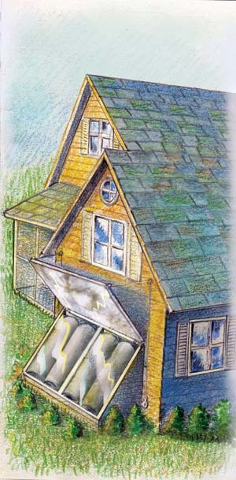
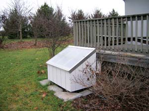
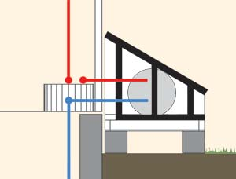

For the do-it-yourselfer seeking an inexpensive, easy-to-build solar water-heating system, the integral passive solar water heater (IPSWH, pronounced ips-wah) is a dream come true. All you need to build this down-to-earth water warmer is a discarded electric water heater tank, a homemade insulated plywood box to house the tank, a sheet or two of used window glass or clear plastic, a few common plumbing fittings, some pipe and a bit of insulation. Add a few satisfying hours of measuring, thinking, sawing, hammering, painting and wrench-turning, and you’ll have a continuous supply of hot water, provided virtually free of cost by that friendly furnace in the sky (the only safe nuclear reactor, 93 million miles away).
First, let’s review the basics of solar heating for new recruits to the wonderful world of renewable energy. There are two basic types of solar water heaters, active and passive. Active systems depend on external power to run pumps to circulate the heat they gather; passive setups don’t. Passive systems may be less efficient at any given moment, but they are much more dependable and cost less per unit of heat captured. Integral passive solar water heaters, also called batch heaters, are the simplest of the passive systems, and their reliability and independence from external power lead to long-term production at a very low cost. I know of a system in Davis, Calif., that has operated for 30 years at a cost per kilowatt-hour equivalent of about a penny.
Batch heaters have long been known as the best choice in warm climates or for seasonal use in colder areas, and recent work with improved materials and designs suggests they may also be the best choice even in colder areas. For owner-built applications, they outshine their flat-plate and evacuated-tube competition in almost every way, including reliability and ease of installation. They have excellent potential for retrofits and are ideal for a range of farming and commercial applications, providing low-cost hot or warm water for washing or preheating for higher temperature uses.
Now that you know the basics, let’s take a look at five of the many types of batch heaters in use today.
The Solar Shower is really a small-scale batch heater, a classic design using clear and black plastic to make a portable and surprisingly effective solar water heater. Water is placed in the bag and then set out with the clear side facing the sun. Within an hour, the water starts to heat up, providing a delightful shower on even a cool day if the sun is bright. I have used these for years while camping and am always impressed with how well they work.
The single-tank batch heater is often dubbed a “breadbox” heater, because some of them look a lot like an oversized old-fashioned breadbox. Overall, it’s probably the most economical, least complicated of the permanent batch heaters to build, requiring only easily acquired materials and basic construction skills. For the “econo-model” breadbox, a salvaged standard electric water heater tank is housed in an insulated plywood box or an old refrigerator or freezer shell. Glazing material (usually glass, fiberglass or high temperature resistant molded plastic) covers the box.
Incoming water enters the breadbox near the bottom of the tank, and sun-warmed water is drawn from near the top and routed to the backup unit in the house. A horizontally oriented breadbox is easier to build and less visible than a vertical one, but tilting the tank increases the stratification of the water and improves the solar angle, resulting in higher temperatures.
The vertical three-tank batch heater is similar but increases performance with more storage and collector area. For the triple-tanker, three water heater core tanks are enclosed in a large, well-insulated box. Glazing material covers the south-facing side and the top of the box. An insulated lid or roll-down cover could be installed to improve heat retention, but I never found it to be necessary. The three tanks are plumbed in series, with the central (therefore best insulated) tank serving as the final stage before the heated water is discharged.
The greater collection surface area, improved thermal stratification caused by the tilted position and the series hookup provide better heating than the smaller, horizontal, single-tank breadbox. To test the efficiency of the three-tank heater, I installed and monitored one for a full year at my home in north-central California and found that it supplied an impressive 70 percent of my family’s hot water!
A greenhouse batch heater may be the best option for performance and freeze protection in colder climates or during the winter months. Almost any configuration can be used inside your sunspace or greenhouse. Usually, the solar water heater is tucked up near the peak of the greenhouse roof to take advantage of the warmest air and best sun exposure (see gallery illustration). For maximum efficiency and freeze protection in cold climates, an insulated, glazed box may be desirable. Insulate your pipes if the sunspace gets cold at night.
A building-integrated batch heater is built into the attic or a south-facing wall, where the tank is more easily protected against freezing. Pipes can run in heated space. When it’s time to reroof, there is no need to remove and replace the heater. (This is when many solar systems are junked, even if they still work.) An insulated box is created in the attic with a glass skylight. A drain pan may be a good idea to minimize leak risk. Make sure you can reach the heater easily for repairs or replacement if necessary.
A few basic principles and considerations govern the design, installation, use and maintenance of batch heaters. IPSWHs are called batch heaters because the heart of the system is the “batch” of water stored in the tank(s). The basic batch heater design is based on a tank or a series of large diameter pipes or tanks. The tank is painted flat black or coated with a selective surface that absorbs solar heat easily and transfers it to the water stored inside. To increase heat collection and reduce heat loss, the tank is enclosed in an insulated box covered on the south-facing side or top with a glazing material.
In the standard batch heater, cold water enters the solar collection tank through a side inlet near the bottom or through a “dip tube” that enters at the top and discharges cold water near the bottom. The heated water exits through an outlet near the top where the water is warmest, then moves to a backup conventional heater (fueled by gas, electricity or wood) where it’s heated all the way to the desired temperature. Batch heaters use waterline pressure for circulation, eliminating the need for expensive pumps and controls. During the summer months, or where it is warm and sunny year-round, the backup heater often can be turned off and bypassed, with the batch heater providing all your hot water needs. In Davis, Calif., my three-tank heater provided all our hot water for nine months.
The relatively low temperature of the collector minimizes expansion and contraction of components, reducing wear and tear. The mass of the water in the system helps protect it from freezing and extreme high temperatures that can harm materials, which leads to long system life. Research in Europe suggests that up to 20 percent of the water in the collector can freeze without damaging the tank, but keep in mind pipes are still at risk unless protected or drained.
If your heater’s specifications and installation follow these six commandments, it will work admirably and will supply inexpensive solar-warmed water, no matter which specific design you choose.
1. Locate your heater for maximum solar exposure. Find a sunny, south-facing location, preferably close to the backup heater to minimize piping distance. You might have to do some calculating to be sure your solar collector will be exposed to the sun when you want hot water, but placement and orientation are the single most important considerations. Remember the sun is high in summer, low in winter. Specific optimum angles for your location during any month of the year can be found here. (Click “Data Services,” then select “Altitude and Azimuth of the Sun or Moon During One Day.”)
Next, determine where your heater will be installed - roof, platform, wall or ground - keeping in mind that a filled three-tank 90-gallon system can weigh more than 800 pounds when full of water. For most applications, it’s best to keep a large solar heater on the ground or on a specially built platform. A rooftop installation may be placed above a load-bearing wall or reinforced section of roof. Ground mounting is easiest, and eliminates the weight problem.
2. Make the collector and storage tank(s) as efficient as you can. First, decide on the type of tank(s) you’ll use for your heater. Tanks come in a wide variety of shapes and sizes, but long, thin cylinders are the most efficient (they have the greatest ratio of surface area to water volume). The cheapest and easiest of these to obtain are used electric water heater cores. Examine the “sacrificial anode,” a rod made of metal with a low resistance to corrosion that is inserted into the tank from the top to attract any corrosive elements in the water. Replace it if substantial corrosion and/or consumption is evident. A new one costs only a few bucks, and it will add measurably to the longevity of your system. Check carefully for leaks, and never use a tank that you have doubts about. Wire-brush it and paint it with rust-resistant flat black paint, or apply a selective surface coating if you can afford it.
If you prefer new tanks, you can order glass-lined electrical water heater cores - minus the heating element, outer insulation and sheet metal cover. Stainless steel tanks also may be available in some areas. (See “Solar Sources” below.)
3. Ensure that your system will retain heat. There are a number of options for glazing the top and the south-facing wall of your unit, including single- and double-paned glass or fiberglass and plastics designed for extended solar exposure. In most cases, you should use two layers of your chosen glazing material with an air space between to provide maximum heat retention. Glass is generally a suitable glazing for owner-built heaters, unless you get severe hail. Twin-wall polycarbonate is a tough alternative. Be sure to flash the glazing carefully to avoid leaks and to caulk and seal the panes to avoid condensation, which can limit energy capture.
4. Size your heater appropriately. To determine the size you need, allow 30 gallons of hot water per person in your household (a conservation-minded family might get by with only 10 gallons per person). Depending on your environment and glazing, you’ll want to plan for 1 to 2.5 gallons of water per square foot of glazing as a general ratio for good heating. A smaller water-to-glazing ratio speeds up heat gain considerably but can increase the freezing risk. If you can’t meet the ideal, don’t lose heart. A smaller system will still provide economical solar water pre-warming and conserve nonrenewable energy and cash. Batch systems with relatively small tanks and simple enclosures are common, and many are still doing well after 30 years, long after most of the more complex systems have disappeared.
5. Make an efficient, freeze-resistant connection to the backup system. Minimize pipe runs and insulate the pipe carefully using foam or fiberglass insulation with aluminum jacketing. Build it to last - if you just use foam it will break down within a few years. It can take up to 72 hours at 12 degrees to freeze an exposed water heater tank, but pipes are much more vulnerable. In a brief freeze, you can leave the hot water on slightly to keep the pipes from freezing. In very cold winter climates, drain the collector tank and pipes in the fall.
Set the system up so you can turn off the backup heater and run solar hot water directly to users, and so you can bypass the solar water system if you want to drain it and shut it down in winter. Make sure the connections are building code approved. After finishing the plumbing system, bleed the air out of the tank through the screw plug at the top of the tank until the system is full of water.
6. Build your system to last. Use the best materials you can afford or scrounge, and take proper care in the construction of your unit. It should work for 20 to 30 years, so it’s worth doing it right. Be safe: Make sure the tank supports are strong enough to bear the load they’ll carry, and get some help with moving tanks safely. If you build a high performance heater, consider adding a tempering valve near the backup heater so no one gets scalded in a shower.
If you use galvanized tanks and fittings with copper tubing, make sure the two metals are separated by appropriate non-conducting, dielectric fittings to prevent accelerated corrosion. I’ve had good luck using copper tubing, plastic dielectric connections and galvanized fittings on my tanks.
The only shortcoming of batch heaters is lower early morning temperatures as a result of nighttime heat loss - not a problem for people who like to shower before they go to bed, but a boosted “wake-up” factor for those who take early morning showers.
More recent research has shown we can reduce nighttime cool-down in several ways. The most effective strategy is a set of insulated lids that are closed at night and raised during the day, with reflective undersides that catch and direct additional solar energy to the tanks. But this can be difficult to operate unless the system is mounted on the ground. Automatic lids also could be made using thermal lifters commonly used to vent greenhouses. If a lid is possible, it’s a good idea: It’s easy to make an insulated hinged lid serve double duty as a reflector when it’s raised to its daytime position, and thus improve efficiency. Reflectors can extend the season into the fall and allow it to start earlier in the spring.
A simpler method to minimize heat loss relies on an ultramodern, special selective surface coating, such as Thurmalox paint. A can of spray paint sufficient to coat 50 square feet costs less than $20.
Neglect of your conventional backup heater can result in unnecessarily high water-heating bills, in spite of the solar heater! Four common forms of neglect are inadequately insulating the room in which the conventional water heater is housed; failing to insulate the tank sufficiently (inexpensive and easy-to-install “thermal blankets” can be added in minutes); maintaining an unnecessarily high temperature setting (sometimes the fault of a bad thermostat); and allowing sediment to build up on the bottom of the tank, insulating the water from the heat source (drain sediment from the tank once a year).
Check your backup heater when you install your solar heater. In fact, even if your solar unit is only a dream at the moment, it makes good energy sense to tune up your conventional water heater right now. If it is reaching the end of its life, consider replacing it with a flash or “on demand” water heater that heats water only when it is wanted. Consumers in European countries long ago realized that it doesn’t make sense to keep 30 or 60 gallons of water hot during hours when no one needs it.
Passive solar water heaters are cost-effective in a wide range of climates, but are easiest to build and operate in warm climates. This technology offers the energy-conscious do-it-yourselfer an attractive alternative to costly hot water and conventional energy dependence.
One of the best ways to get started is with a group of friends. Build a series of water heaters together and make it a fun project, sharing labor and expertise. Someone will have the plumbing tools and skills; someone else, the carpentry skills and tools. The combined good sense of the group will get the job done quickly and safely.
If you’re not a do-it-yourselfer, there are numerous effective commercial solar hot water systems available for virtually any location in the world (for more information, click here.) In colder areas, a thermosiphon system is often a good choice. Freeze protection can involve liquid antifreeze with heat exchangers, drain-back or other systems to avoid freezing damage. Many products now use evacuated-tube collectors to heat the water, which then rises into a well-insulated storage tank.
Of course, you don’t have to take my word for it. Look around, read around, shop around, and - most important - build for yourself. I think you’ll come to the same conclusion I did years ago that integral passive solar water heaters provide the most economical, efficient, down-to-earth method of water warming under the sun.
The principles used in modern batch heaters are the same as those first applied to solar water heating more than 100 years ago. Robber’s Roost, Butch Cassidy’s 1880s hideout in Utah, reportedly still includes the remains of a passive solar water heater: a large black can filled with water and placed in the sun. The first commercial solar water heater, patented in 1891 by Clarence Kemp, used four cylindrical water tanks housed in a pine box covered with single-pane glass. By 1900, more than 1,600 of these units were in use in the United States. In 1898, Frank Walker, of Pasadena, Calif., applied for a patent on an improved design. Walker’s model was recessed into the roof, instead of exposed on top of the roof like Kemp’s heaters. The Walker unit also incorporated connections to a woodstove with a water-heating tank for backup heating, the direct forerunner of today’s most common batch heater application: a solar preheater feeding into a standard water heater in the house.
As successful as these early heaters were, they gradually disappeared as oil, electricity and natural gas became available. These new, seemingly cheap energy sources brought high costs in environmental damage, human health, global warming and habitat damage - but these costs were, and still are, ignored.
Fortunately, these new energy developments didn’t bring solar water-heating research to a total standstill. At the University of California, Davis, in 1936, F. A. Brooks tested several heater designs and demonstrated that tank-type solar heaters could produce water temperatures in excess of 120 degrees. He also discovered that upright tanks placed on an incline delivered hotter water than horizontal units. Brooks concluded that batch heaters could produce hot water at a cost consistently below that of flat-plate solar systems.
Growers Supply (polycarbonate glazing)
Vaughn Manufacturing (tanks)
|
DAVE CHANNON A collector with multiple tanks, like this vertical batch heater, can produce much of the hot water a small family needs. Adding an insulated cover to the collector conserves heat and can also function as a reflector. |
 DAVE CHANNON A building-integrated hot water system offers protection against freezing temperatures. This system is less obvious than ground- or platform-mounted heaters. |
NATIONAL RENEWABLE ENERGY LAB Single-tank batch (breadbox) heater |
|
NATIONAL RENEWABLE ENERGY LAB A “breadbox” heater (containing a single, horizontal storage tank) may supply all of your hot water needs for a season or simply “boost” or preheat water.
|
 SOLAR COMPONENTS CORPORATION |
 JOHN CANIVAN |